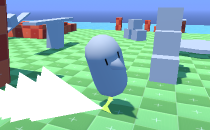
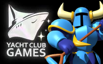

Hi, I'm Ian Green, child of '89 and long time game developer. My passion is gameplay design, but I've worn many hats to make those designs possible, from programming to art to 3D modeling. I originally picked up these skills as an aspiring solo developer, but in the workplace I've found these skills enable me to fit into any role (even the weird ones), and easily collaborate across multiple disciplines. Thus, Ian Green the Technical Designer was born!
This page elaborates on things I briefly touched on in my resume. If you want a copy of my resume, or just want to say hello, reach out to me at !
I always have a few projects of varying quality I'm kicking around for fun. Most of my other work is under NDA, so I'm polishing up my more promising prototypes for your perusal!
I worked at Yacht Club Games as a Designer from 2022 to 2024. The bulk of my work was on an Untitled Game featuring everyone's favorite Shoveling Knight. I also rounded out the design team on Mina the Hollower.
I worked at Gears for Breakfast as a Technical Designer from 2017 to 2022. I worked on A Hat in Time until 2019, and our Unannounced Second Game from 2019 onward.
At Gears for Breakfast I wore a lot of hats, working on gameplay design, level design, programming, prototyping, documentation, UI design, dialogue writing, and a little bit of 2D and 3D art for kicks.